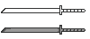
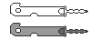
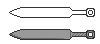
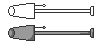
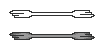
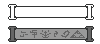

Настройки
Весь мод настраивается одним файлом config/naruto-mod.toml —
в нём 43 опции. Здесь перечислены все, по разделам, с точными значениями по умолчанию.
Цены и длительности самих техник в конфиг не выведены: это константы кода, их правят только
в сборке.
Файл и разделы
Мод регистрирует один общий (common) конфиг с жёстким именем
config/naruto-mod.toml. Общий он по типу, а не по месту: на выделенном сервере
каждый читает свой файл, по сети значения не передаются. На практике это значит,
что игровые числа (чакра, освоение, Камуи) определяет серверный файл, а клиентские мелочи —
вид полоски и пороги удержания клавиш — клиентский.
Forge следит за файлом: сохранённые правки подхватываются на ходу, перезапуск не нужен — мод перечитывает значения по событию перезагрузки конфига.
| Раздел в файле | Опций | О чём |
|---|---|---|
| [server.player.energy_bars] | 9 | Чакра, стамина, замены, сенин-мана, хенге. |
| [server.player.mastery] | 14 | Кривая освоения, скидки, штраф за смерть, медитация. |
| [server.player.sensing] | 2 | Радиус сенсорики и цена ночного зрения. |
| [server.player.mining] | 2 | Широкий прокоп и чутьё руды. |
| [server.player.techniques] | 5 | Сцепление, адаптация, дым, тишина. |
| [server.weapons] | 6 | Радиусы взрывов и пороги клавиш каста. |
| [server.kamui] | 2 | Карманное измерение. |
| [server.dojutsu] | 6 | Пять глаз и Чибаку Тенсэй: Риннеган, Шаринган, Бьякуган, Джоуган, Сенриган. |
| [server.friends] | 1 | Система друзей. |
| [client.ui] | 1 | Дизайн полоски чакры. |
Расход чакры и КД техник, время жизни клонов, слив здоровья у Восьми врат, радиусы рудокопа и дыханий — всё это константы кода. В файле живут только ресурсы игрока, освоение, взрывы, пороги клавиш, Камуи, друзья и интерфейс.
Клавиши и каст техник
Сами клавиши мода в TOML не лежат — они обычные назначения, их меняют в Настройки → Управление. Мод регистрирует пять:
| Назначение | По умолчанию | Имя в переводе |
|---|---|---|
| Клавиша техник 1 | C | Такт комбо с кодом 1: в записях вида 13321
каждая цифра — это C, V или B. |
| Клавиша техник 2 | V | Код 2. |
| Клавиша техник 3 | B | Код 3. |
| Leap — рывок вперёд | X | Отдельная клавиша, не комбо. В русском переводе её строки нет — в списке управления она подписана английским «Leap». |
| Меню техник | J | Список всех техник с комбо, освоением и меткой активных стоек — «Меню Техник». |
Как из комбо получается каст — решают два порога в [server.weapons], оба
считаются в тиках (20 тиков = 1 секунда):
| Опция | По умолчанию | Что делает |
|---|---|---|
| jutsuKeyHoldThreshold | 15 (0,75 с) | Удержание последней клавиши комбо превращает каст в канал: техника начинается, пока клавиша зажата, и отпускание — это её завершение. Такое «удержание» понимают только техники-каналы. |
| jutsuActivateDelay | 15 (0,75 с) | Пауза после последней клавиши комбо: если её не удержали, техника срабатывает — мгновенная сразу, стойка переключается. Меньше значение — каст «нервнее», больше — ввод медленнее. |
Оба порога читает клиент: на выделенном сервере они берутся из файла клиента, а не сервера.
Ресурсы
Раздел [server.player.energy_bars] — фундамент: сколько у игрока чакры, стамины
и замен, и какие ветки вообще разрешены.
| Опция | По умолчанию | Что делает |
|---|---|---|
| maxChakra | 25 | База максимальной чакры. К ней прибавляются бонусы: +40 от корня
дерева скилов, прибавки ветвей, броня и медитирующие клоны,
поэтому «настоящий» максимум в игре заметно выше. Итог считает
getMaxChakra(). |
| chakraRegen | 0.05 (1/с) | Сколько чакры восстанавливается за тик после задержки регенерации (любой расход её сбрасывает или обновляет). |
| maxStamina | 100 | База максимума стамины. Как и чакра, к ней прибавляются бонусы дерева скилов (до +200 на всех узлах). Тратят стамину рывок, двойной прыжок, Восемь врат и мягкая посадка. |
| staminaRegen | 0.4 (8/с) | Восстановление стамины за тик. |
| maxSubstitutions | 1 | Базовый максимум зарядов у техники «Замещение». Узлы дерева прибавляются к нему (до 5). В креативе замена бесплатна. |
| substitutionRegenTime | 60 (с) | Время восстановления одного заряда в секундах — по умолчанию одна замена в минуту. В коде значение умножается на 20, то есть трактуется именно как секунды. |
| maxSeninMana | 100 | Максимум природной энергии (сенин-маны): её копит сбор энергии, ею живёт Режим Мудреца. |
| sageModeEnabled | true | Выключает всю ветку сендзюцу разом: ни собрать ману, ни войти в режим. |
| hengeEnabled | true | Разрешает Хенге копировать чужой облик.
При false техника отказывает целиком. |
Освоение
Раздел [server.player.mastery] — вся прогрессия техник. Как кривая и штрафы
складываются в игре, разобрано на странице Освоение; здесь — сами
ручки.
| Опция | По умолчанию | Что делает |
|---|---|---|
| masteryEnabled | true | Общий выключатель освоения: при false техники не дешевеют, КД не
сокращаются, печать не становится бесплатной, а смерть ничего не отнимает. |
| halfwayCasts | 40 | Сколько кастов техники нужно, чтобы её освоение дошло до половины. |
| exponent | 2.0 | Насколько медленно освоение «разгоняется». При 1 первые касты уже
дают заметный эффект, при 2 — почти ничего, но половина кривой всё
равно приходится на halfwayCasts. |
| costReduction | 0.4 | Насколько дешевле становится полностью освоенная техника (0,4 = на 40 %). |
| cooldownReduction | 0.4 | Насколько короче становится её перезарядка (0,4 = на 40 %). |
| sealFreeAt | 0.9 | Освоение, с которого чакра-печать не нужна вообще — даже для мульти-клона. |
| deathPenaltyLowMin | 0.03 | Минимальная доля прогресса, которую отнимает смерть, пока освоение не выше половины. |
| deathPenaltyLowMax | 0.05 | Максимальная доля на том же участке кривой. |
| deathPenaltyHighMin | 0.10 | Минимальный штраф за смерть ближе к полному освоению. |
| deathPenaltyHighMax | 0.20 | Максимальный штраф наверху кривой. |
| meditationRadiusMax | 512 | Дальность связи медитирующих клонов на полном освоении, в блоках (по умолчанию — почти 32 чанка). Растёт по кубу освоения, начиная с 8 блоков. |
| meditationPassiveAt | 0.95 | Освоение медитации, после которого каждый медитирующий клон даёт бонус ёмкости даже вне радиуса. |
| meditationPassiveCapacity | 25 | Сколько чакры ёмкости добавляет такой «дальний» клон. |
Смерть отнимает долю освоения (от 3–5 % у середины до 10–20 % у верха), а затем пересчитывает счётчик кастов назад — поэтому на высоком освоении пара смертей заметно откатывает технику. Точная формула — на странице Освоение.
Чувство чакры
Раздел [server.player.sensing].
| Опция | По умолчанию | Что делает |
|---|---|---|
| radiusMax | 96 | Радиус сенсорики на полном освоении, в блоках (96 — шесть чанков). Необученное чувство всегда видит на 16 блоков, дальше радиус растёт линейно. |
| nightVisionChakraPerSecond | 1.0 | Сколько чакры в секунду съедает ночное зрение (тап по тому же комбо). Гаснет само на нуле чакры. |
Копание
Раздел [server.player.mining] — две техники, которые работают с породой.
| Опция | По умолчанию | Что делает |
|---|---|---|
| wideDigEnabled | true | Разрешает широкий прокоп: каждый удар киркой превращается в плоскость 3×3. |
| oreSenseEnabled | true | Разрешает чутьё руды — импульс, который подсвечивает руду сквозь породу. На публичном сервере это по сути краткий x-ray, поэтому его и вынесли в конфиг. |
Стойки и уловки
Раздел [server.player.techniques] — всё, что не про землю: лазание, выживание
в агрессивной среде, дым и тишина.
| Опция | По умолчанию | Что делает |
|---|---|---|
| adhesionEnabled | true | Разрешает стойку сцепления чакрой — медленное лазание по стене, к которой прижался кастер. |
| adaptationEnabled | true | Разрешает адаптацию тела: дыхание под водой, огнеупорность в лаве, защита от обморожения. |
| smokeEnabled | true | Разрешает дымовую завесу. |
| smokeBlindPlayers | true | Слепит ли дым попавших в него игроков, а не только мобов. На PvP-сервере это можно выключить, оставив дым убежищем от мобов. |
| silenceEnabled | true | Разрешает подавление звука: шаги и удары кастера перестают слышать скалк-сенсоры, шрикеры, Хранитель и мобы. |
Оружие и взрывы
Раздел [server.weapons]: сила взрывов у бомбового арсенала. Два порога каста из
этого же раздела описаны выше, в клавишах.
| Опция | По умолчанию | Что делает |
|---|---|---|
| kunaiExplosionRadius | 3 | Радиус взрыва взрывного куная, в блоках. |
| kunaiExplosionBreakBlocks | true | Ломает ли взрыв куная блоки. Сам кунай и его поведение — на странице предметов. |
| paperBombExplosionRadius | 4 | Радиус взрыва бумажной бомбы. Тем же числом пользуются клоны, призванные с бомбой в руке. |
| paperBombExplosionBreakBlocks | true | Ломает ли блоки взрыв самой бомбы. Клон-взрывник исключение: его взрыв блоки не трогает никогда, это жёстко зашито в код. |
Взрыв бумажной бомбы (и взрывного куная) фильтра союзников не имеет — в радиусе достаётся и кастеру, и его клонам. Союзников щадит только взрыв клона-взрывника и серия расэнсюрикена.
Мир и механики
Раздел [server.player.world] — то, как мир реагирует на ниндзя: погода и стихии,
сон, шум техник, добыча в сундуках, звания. Почти всё здесь можно выключить, не трогая сами
техники.
| Опция | По умолчанию | Что делает |
|---|---|---|
| environmentEnabled | true | Влияют ли погода, биом и измерение на дыхания и на скорость сбора природной энергии. |
| scrollLootEnabled | true | Подмешивает свитки и снаряжение мода в ванильные сундуки. false оставляет
сундуки полностью ванильными; свитки тогда придётся выдать командой. |
| sleepRestoresChakra | true | Полностью восстанавливает чакру и сенин-ману после сна до утра. Считается только естественное пробуждение, не от урона. |
| chakraFlowEnabled | true | Даёт короткий эффект «поток» (ускоренный пассивный приток) после того, как полоса чакры заполнена вручную. |
| chakraExhaustionEnabled | true | Замедляет кастера на почти пустой чакре. Мягкий штраф: снимается сам, как только пул восстановился. |
| jutsuLoudnessEnabled | true | Слышит ли мир касты техник (скалк-сенсоры, шрикеры, Хранитель, уши мобов). Тихие техники молчат в любом случае. |
| meditationAmbienceEnabled | true | Гудят ли медитирующие клоны и светятся ли мягким светом. Чисто косметика. |
| lightningChargesBatteries | true | Молния в громоотвод подзаряжает чакра-батареи рядом. Единственный бесплатный способ зарядить батарею. |
| markerRespawnEnabled | true | Стоящее бревно-метка работает точкой возрождения, если у ниндзя нет кровати или якоря. Кровать и якорь всегда важнее. |
| sentrySealRadius | 16 (4–64) | Радиус, в котором сторожевой печать видит враждебных мобов и держит зону чистой от спавна. |
| sentrySealSuppressesSpawns | false | Запрещает враждебным мобам спавниться внутри радиуса печати. По умолчанию выключено; спавнеры не затрагиваются. |
| hengeReactionsEnabled | false | Реагируют ли мобы на личину. Облик монстра заставляет жителей бежать, а железных големов — брать носителя в цель. По умолчанию выключено: это меняет поведение AI мира. |
| elementalStatesEnabled | true | Оставляют ли дыхания состояния: промокшее существо не загорается и получает меньше урона огнём, холодная вода замедляет, пока существо не согреется. |
| ninjaRanksEnabled | true | Существуют ли звания Генин→S-ранг. Ранг считается по изученным узлам дерева и вехам за боссов и открывается как ачивка; выключение убирает всю лестницу. |
Если scrollLootEnabled = false, техники, которым нужен свиток (Расэнсюрикен,
Камуи, Режим Мудреца, Стена Земли, Кирин), можно получить только командой
/give @s narutomod:scroll_kirin и т. п. Кирин в дереве нет вовсе — она
открывается только свитком.
Камуи
Раздел [server.kamui] — карманное измерение целиком. Устройство самого мира —
на странице Мир и Камуи.
| Опция | По умолчанию | Что делает |
|---|---|---|
| kamuiEnabled | true | Разрешает технику Камуи целиком: и шаг в измерение narutomod:kamui,
и затяг цели. При false каст отказывает с сообщением «отключён на этом
сервере»; фазовое тело — отдельная техника, его это не выключает. |
| kamuiTransferSeconds | 30 (1–600) | Сколько секунд всё затянутое (кто угодно, кроме кастера) проводит в пустоте, прежде чем его выбросит точно туда, откуда взяли. |
Выход из пустоты — это тот же каст, поэтому при kamuiEnabled = false
выбраться из измерения нечем: игрок внутри окажется заперт, пока настройку не вернут.
Додзюцу
Раздел [server.dojutsu] — глазные стойки и техники, построенные на них.
Подробности механик — на странице Техники.
| Опция | По умолчанию | Что делает |
|---|---|---|
| rinneganEnabled | true | Разрешает открывать Риннеган. При false и стойка, и Вселенская сила
отказывают сообщением «отключён на этом сервере»; Чибаку Тенсэй и Поглощение Момошики
наследуют запрет, потому что требуют открытого глаза (своей опции у поглощения нет). |
| chibakuTenseiEnabled | true | Разрешает Чибаку Тенсэй отдельно от глаза: можно оставить Риннеган игрокам, но убрать самую разрушительную технику. |
| sharinganEnabled | true | Разрешает открывать Шаринган. При false отказывают и стойка, и
Аматэрасу, потому что оно требует открытого глаза. |
| byakuganEnabled | true | Разрешает открывать Бьякуган и, вместе с ним, Вращение небес (оно требует глаза). |
| jouganEnabled | true | Разрешает открывать Джоуган, а с ним — Пространственный шаг и Разрыв чакры. |
| senriganEnabled | true | Разрешает открывать Сенриган и, вместе с ним, Взор Сенригана (вселение в своего клона) и Полёт Сенригана. |
Взрывы Чибаку Тенсэй всегда идут с ExplosionInteraction.NONE: техника вырывает
землю и швыряет её, но не подрывает постройки. Это не настройка, а решение кода — иначе одна
каст-цепочка стирала бы деревню.
Друзья
Раздел [server.friends]. Дружба — двусторонний договор между игроками: техники
мода не задевают друга, а клоны считают друзей кастера своими. Список открывается кнопкой
«Друзья» справа снизу в дереве скилов.
| Опция | По умолчанию | Что делает |
|---|---|---|
| friendsEnabled | true | Включает систему друзей целиком. При false экран отвечает «друзья
отключены на этом сервере», а запросы не сохраняются. Записи дружб при этом
не стираются: выключение только прячет механику, включение
возвращает всё как было. |
Список хранится в saved_data/narutomod_friends.dat мира, а не в данных игрока.
Поэтому удаление из друзей срабатывает, даже если второй игрок офлайн, а запрос, отправленный
офлайн-игроку, ждёт его следующего входа.
Интерфейс
Раздел [client.ui] — только вид полоски, на игровые числа не влияет.
| Опция | По умолчанию | Что делает |
|---|---|---|
| chakraBarDesign | 0 (0–7) | Номер дизайна полоски чакры и стамины. Сенин-мана рисуется той же текстурой и геометрией, просто выше и с зелёной заливкой, и появляется, только когда есть что показывать. |
Восемь дизайнов полоски
Значение chakraBarDesign — это индекс в списке ниже, в порядке кода:






Скриншоты полосок сняты с текстур мода; в игре полоска рисуется поверх HUD в правом верхнем углу, рядом с ней — полоска стамины.